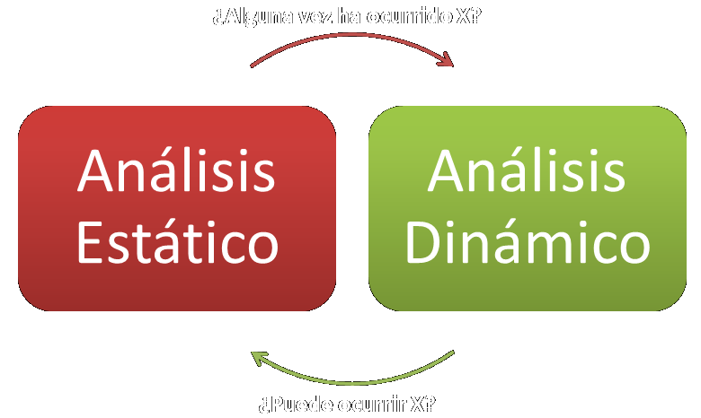
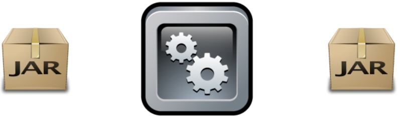
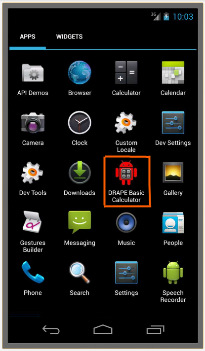
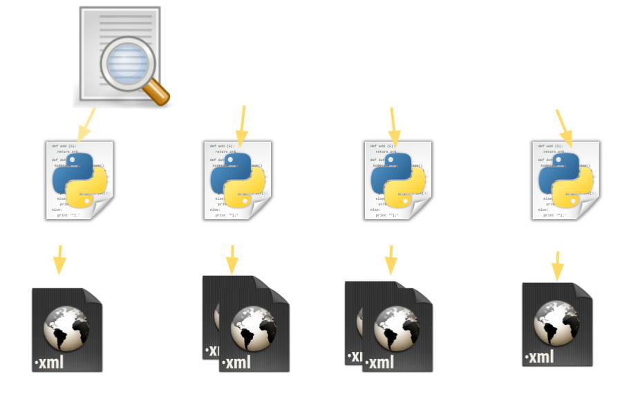
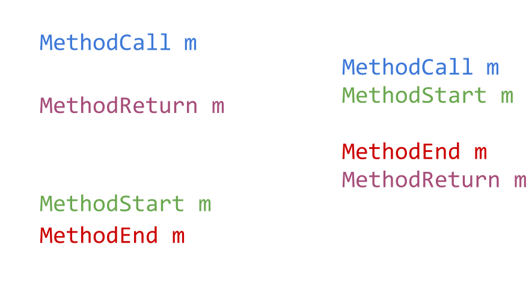
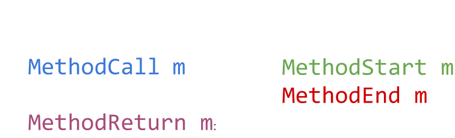
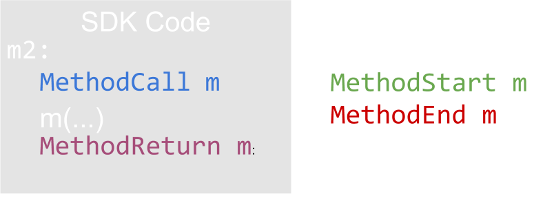

DroidRecord
Detección y modelado de retrollamadas (callbacks) mediante instrumentación de código en Android
Presentado por Lázaro Clapp
Parte del projecto STAMP:
Manolis Papadakis, Patrick Mutchler, Lázaro Clapp, Osbert Bastani,
Saswat Anand, Jason Franklin, Alex Aiken
Stanford University
Applicaciones maliciosas en android
- Teléfonos "Inteligentes" == Computadoras
- Más información personal que nunca antes
- Oportunidad para autores de aplicaciones maliciosas
"Aumento de ~472% en malware desde 2010"
Análisis de software
Comportamiento del programa: Todas sus posibles ejecuciones
Problema: Usualmente no podemos ver todas las ejecuciones
¿Que podemos ver?: El código y algunas ejecuciones
Análisis Estático

- Opera sobre la estructura del programa en reposo: código
- Produce una sobre-aproximación del comportamiento del programa
- Puede evitar falsos negativos
- (En general) No puede evitar falsos positivos
- La precisión es costosa: O(2n)
Análisis Dinámico
- Opera sobre una o más ejecuciones del programa
- Produce una sub-aproximación del comportamiento del programa
- Evita falsos positivos
- No puede evitar falsos negativos
- Costo: Usualmente lineal con la longitud de la ejecución
Análisis de software
- Análisis estático: Sobreaproximación
- Análisis dinámico: Subaproximación
Análisis de software
DroidRecord
Nuestro sistema de análisis dinámico
Tres pasos:
- Instrumentación
- Ejecución
- Análisis
DroidRecord - Paso #1: Instrumentación
Transformamos la applicación a nivel de su código ejecutable (DEX)
Nota: Instrumentamos sólo la applicación, no la plataforma/bibliotecas de Android
DroidRecord - Paso #2: Ejecución
DroidRecord - Paso #3: Análisis
Nuestro ejemplo: Retrollamadas
- Es un método de la applicación que es llamado desde código que corresponde a la plataforma
- Usados de manera extensiva en Android: onCreate(), onClick(),...
- ¡Importante! Entender las retrollamadas es fundamental para entender el ciclo de vida de la applicación
- Modelar el ciclo de vida de la applicación: pre-requisito para múltiples analísis estáticos
Llamada a plataforma
public void myMethod(View view) {
ConnectivityManager connMgr = (ConnectivityManager)
getSystemService(Context.CONNECTIVITY_SERVICE);
}
getSystemService es una llamada a la plataforma
Retrollamada (callback)
class MyClickListener extends Button.OnClickListener {
public MyClickListener() {}
public void onClick(View v)
{
//perform action
}
}
rightButton.setOnClickListener(new MyClickListener());
setOnClickListener es una llamada a la plataforma
onClick es una retrollamada
Retrollamada (callback)
rightButton.setOnClickListener(new Button.OnClickListener() {
public void onClick(View v)
{
//perform action
}
});
Código equivalente usando una subclase anónima
Instrumentación (1/2)
JIMPLE: Representación intermedia de programas en Java, similar a bytecode o Dex
$a = $r1.f
$b = 0
$c = invoke $obj.m($a,$b)
Instrumentación (2/2)
$a = $r1.f
invoke $TR.recordLoad($1,"f",$a)
$b = 0
invoke $TR.recordCall($obj,"m",$a,$b)
$c = invoke $obj.m($a,$b)
invoke $TR.recordReturn($obj,"m",$c)
Eventos: Invocacción de Métodos
4 differentes eventos relacionados con llamadas a métodos son escritos al registro
- MethodCall m: Cuando m es llamado en m2
- MethodStart m: Cuando m comienza a ejecutarse
- MethodEnd m: Cuando m termina de ejecutarse
- MethodReturn m: Justo después de que m es llamado en m2
Eventos: Invocacción de Métodos, Ejemplo
Detección de retrollamadas (1/3)
Detección de retrollamadas (2/3)
Problema: No instrumentamos el código de la plataforma: sus eventos no aparecen en la bitácora
Detección de retrollamadas (3/3)
Bitácora: ... Record MethodStart m ...
con Record != MethodCall m
Registro de retrollamadas
class MyClickListener extends Button.OnClickListener {
public MyClickListener() {}
public void onClick(View v)
{
//perform action
}
}
rightButton.setOnClickListener(new MyClickListener());
onClick es una retrollamada
setOnClickListener es un método de registro para onClick
Registro de retrollamadas
"An API Method m, that has an invocation mi, that happens before a Callback Invocation ci and takes a parameter p which is also the this parameter for ci, but not the this parameter in mi."